Resgate de Rua
Recebemos denúncias e realizamos resgates de cães e gatos em situação de abandono, maus-tratos ou risco nas ruas. Nossa equipe atua com cuidado e segurança para retirar cada animal da situação de vulnerabilidade.
Da rua ao lar definitivo, cada animal passa por três etapas com a gente. Conheça as três frentes de trabalho da Patinhas do Amanhã abaixo.

Recebemos denúncias e realizamos resgates de cães e gatos em situação de abandono, maus-tratos ou risco nas ruas. Nossa equipe atua com cuidado e segurança para retirar cada animal da situação de vulnerabilidade.
Todo animal resgatado passa por avaliação veterinária, vacinação, castração e tratamento necessário antes de qualquer processo de adoção. Também mantemos parcerias com clínicas para casos mais graves.
Conduzimos todo o processo de adoção com entrevistas, visitas e acompanhamento pós-adoção, garantindo que cada animal encontre uma família preparada para cuidar dele para sempre.
| Projeto | Beneficiários | Status |
|---|---|---|
| Resgate de Rua | 350 animais resgatados | Em andamento |
| Cuidado e Assistência Veterinária | 500+ atendimentos | Ativo |
| Adoção Responsável | 280 adoções concluídas | Ativo |